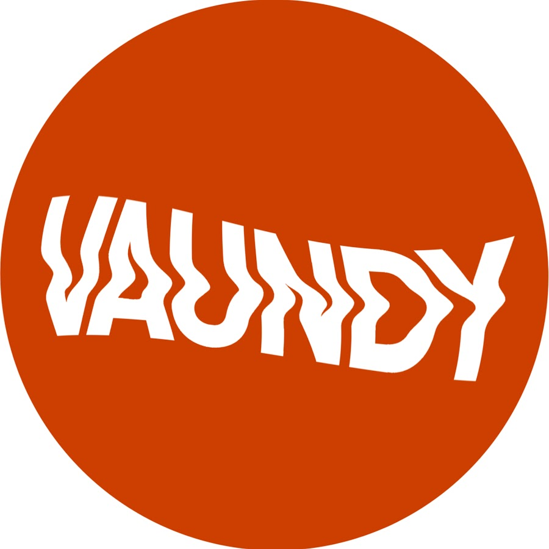

J-POP / ALTERNATIVE
Vaundy
2026년 9월 19일(토) 오후 5:00, 2026년 9월 20일(일) 오후 4:00 · 인스파이어 아레나확인된 공연 일정
지난 공연 기록입니다. 일정과 예매 조건은 당시의 기록이며 현재 판매 상태를 나타내지 않습니다. 동일 시리즈에는 2회 공연 기록이 있습니다.
공연별 실제 예매 분석
공식 예매처 기준 · 마지막 확인 2026-09-19
회차별 시작 시각 비교
| 공연일 | 시작 시각 |
|---|---|
| 2026년 9월 19일(토) | 오후 5:00 |
| 2026년 9월 20일(일) | 오후 4:00 |
권종별 액면가: 스탠딩석 165,000원 (최저 확인가보다 11,000원 높음) · R석 165,000원 (최저 확인가보다 11,000원 높음) · S석 154,000원 (최저 확인가)
권종 가격은 공연별 공식 예매 안내 기준입니다. 금액 차이만 비교했으며 등급별 좌석 위치·특전은 공식 상품 안내에서 확인되는 범위만 표시합니다.
- 선예매·일반예매 조건
- 별도 선예매 없이 일반·글로벌 예매와 Play&Stay 상품이 2026년 3월 11일 20시에 열렸습니다. 회차별 ID 1개당 1인 2매까지 예매할 수 있습니다.
- 본인 확인
- 글로벌 예매는 관람자의 신분증 정보와 예매자 정보가 일치해야 합니다. Play&Stay는 공연 당일 호텔에서 신분증 확인 후 티켓과 입장 팔찌를 배부합니다.
- 티켓 수령·모바일 티켓
- 일반 좌석의 배송·수령 방식은 NOL 티켓 예매 내역을 확인해야 합니다. 실시간 판매 상태·매진·잔여석은 기록하지 않으며 공식 예매처의 현재 안내가 기준입니다.
- 취소표가 풀리는 방식
- NOL 티켓의 공연별 취소 마감과 수수료가 적용됩니다. 취소표 재노출의 고정 시각은 공식 공지에 없습니다.
아티스트 소개
작사, 작곡, 편곡과 영상 작업을 아우르며 장르 경계를 넘는 음악을 만드는 일본 싱어송라이터입니다.
Vaundy 아티스트 페이지 →공연장 교통 안내
인천 영종도에 있어 서울 도심 공연장보다 이동 시간이 깁니다. 공식 셔틀, 공항철도와 환승 버스, 자가용 경로를 미리 비교하고 귀가편까지 예약하는 것이 좋습니다.
인스파이어 아레나 현장 가이드 보기 →교통편과 출입구는 당일 운영 상황에 따라 달라질 수 있습니다. 출발 전 주최사와 공연장 공지를 다시 확인하세요.
공연 당일 체크리스트
- 2026년 9월 20일(일) 오후 4:00 · 인스파이어 아레나의 입장구와 집합 시각은 당일 공식 공지를 확인하세요.
- 공연별 본인 확인·티켓 수령 조건은 위 예매 분석과 공식 예매처 안내가 최종 기준입니다.
- 최신 판매 상태와 관람 조건은 공식 예매처에서 다시 확인하세요. 예매 페이지의 최신 공지가 이 상세 기록보다 우선합니다. 공연 직전에는 날짜, 시작 시각, 입장 번호, 수령 장소와 재입장 가능 여부도 함께 확인하세요.
입문용 추천곡 3개
아래 怪獣の花唄, 踊り子, 再会 순서는 J-LIVE의 입문용 추천 순서입니다. 각 곡은 공식 YouTube 영상으로 연결됩니다.
Vaundy 공연을 더 잘 즐기는 법
여일육 작성 · 편집·검증 기준 · 마지막 일정 검증 2026-09-19
이번 공연의 관전 포인트
Vaundy 공연의 재미는 곡마다 록, 팝, 전자음악과 펑크의 질감이 빠르게 바뀌는데도 하나의 목소리로 이어진다는 점입니다. 대표곡만 알고 가도 즐길 수 있지만, 템포가 다른 곡을 연달아 들어 보면 세트리스트가 어떻게 상승과 이완을 만드는지 더 잘 보입니다. 대형 아레나에서는 조명과 영상이 리듬 변화에 맞춰 확장되는 순간도 중요한 관전 포인트입니다.
공연장 도착과 귀가 계획
인스파이어 아레나는 영종도에 있어 공연 자체보다 귀가 계획이 더 중요할 수 있습니다. 공식 셔틀의 예약·탑승 위치, 공항철도 환승 시간과 자가용 출차 시간을 공연 전날 다시 확인하세요. 내부 이동도 길 수 있으므로 입장 후 화장실과 좌석 구역을 먼저 찾고, 막차에 맞춰야 한다면 앙코르 이후 이동 시간을 보수적으로 계산하는 편이 좋습니다.
공식 출처와 검증 기록
일정 확인 2026-09-19 · 가격 확인 2026-09-19 · 판매 상태 확인 2026-09-19T09:00:00+09:00 · 글 수정 2026-09-19